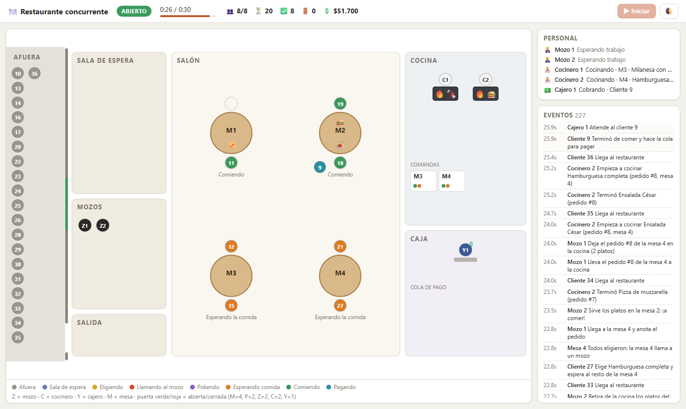
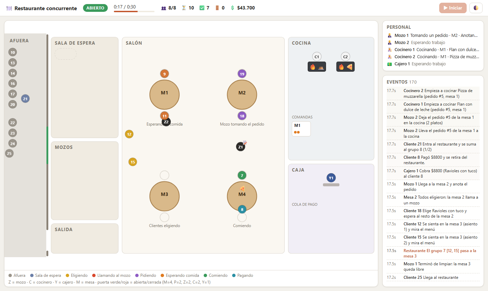
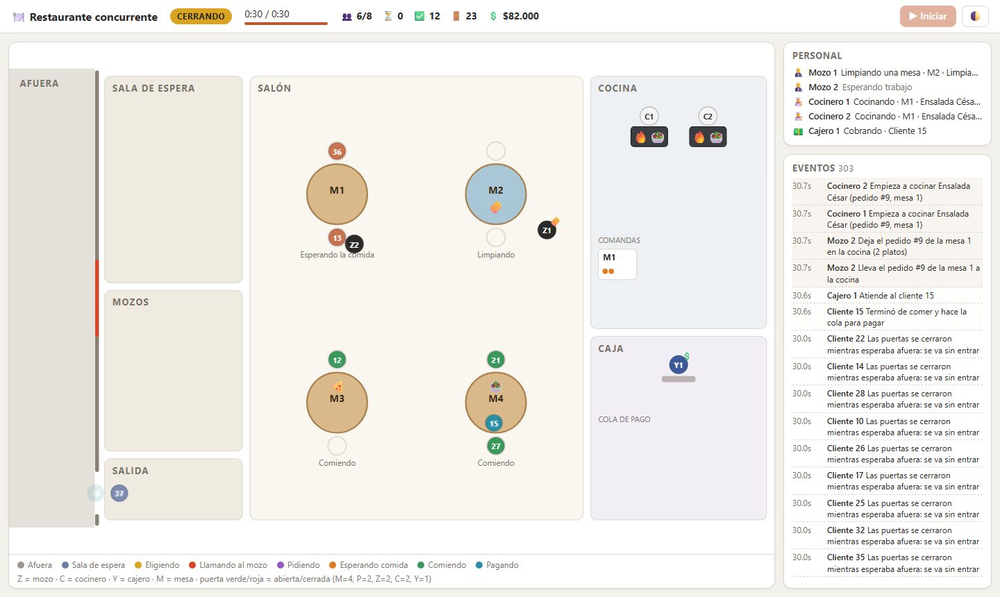
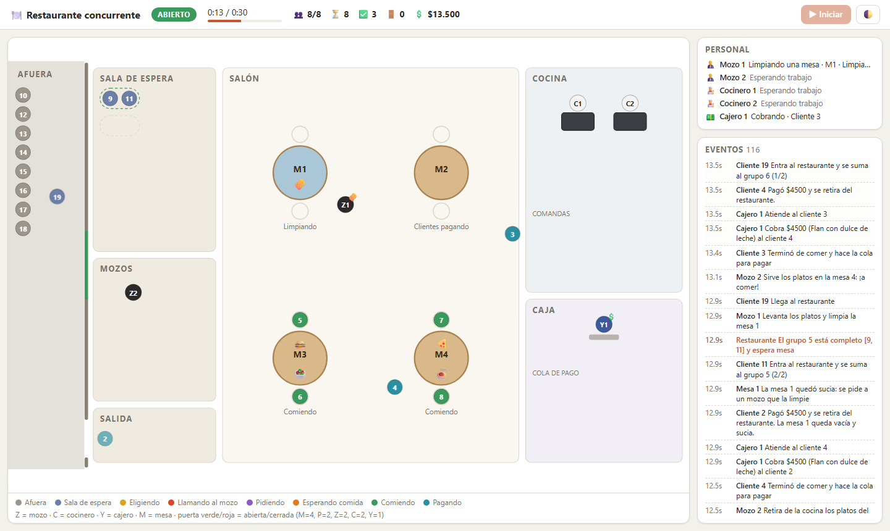
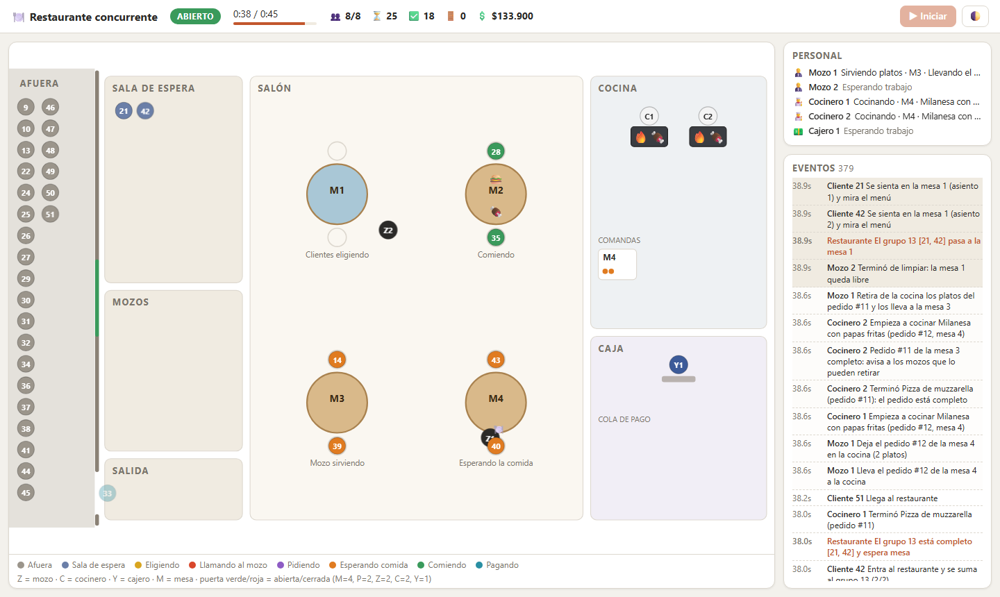
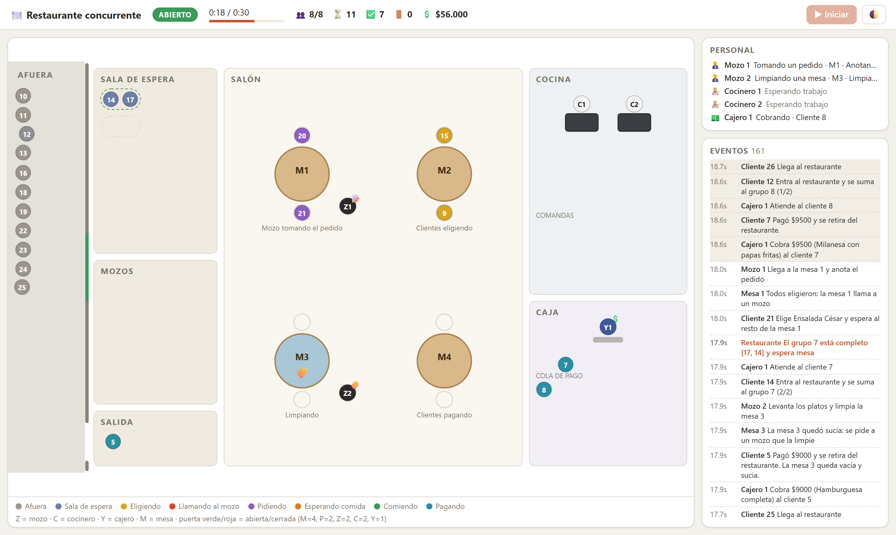

Programación Avanzada 2026 · Entregable 2
Un simulador en Java donde cada persona es un hilo, con el mapa del local en vivo.

Nuestro diseño
Se coordinan con recursos compartidos y colas; nadie conoce a los demás hilos.
Eso decide quién se va y quién se queda cuando cierra el local.
Una cola con prioridad: servir, después tomar pedidos, después limpiar.
Pedidos en orden de llegada, plato por plato. La mesa se libera recién al limpiarla.
Memoria compartida segura
| Herramienta | Dónde | Por qué esa |
|---|---|---|
| synchronized | Mesa · SalaDeEspera | Monitor: varias condiciones sobre un mismo estado, con wait/notifyAll |
| ReentrantLock + Condition | Cocina | Buscar un plato pendiente y marcarlo es una operación atómica. Lock justo |
| ReentrantReadWriteLock | EstadoRestaurante | Cambio + foto + evento bajo el write lock; las lecturas se comparten |
| Semaphore(P·M) | la puerta | Capacidad limitada: el resto espera afuera |
| Clases atómicas | abierto · platosPendientes · Contadores | Banderas y contadores sin lock (CAS), siempre visibles |
lock.lock();
try {
while (true) {
Plato plato = ⟦primerPlatoPendiente()⟧;
if (plato != null) { /* … */ return plato; }
if (cerrada) return null;
⟦hayPlatos.await();⟧
}
} finally { lock.unlock(); }
Sincronización por condición
public synchronized boolean esperarMozo() throws InterruptedException {
⟦while (!pedidoTomado && !cancelada)⟧ {
wait(); // suelta el monitor mientras espera
}
return pedidoTomado;
}
| Quién espera | Condición | Quién notifica |
|---|---|---|
| Mesa.esperarMozo | pedido tomado o cancelado | tomarPedido, cerrar |
| Mesa.esperarComida | servida | servir |
| SalaDeEspera.esperarMesa | el grupo tiene mesa o se cerró | ingresar, mesaLiberada, cerrar |
Sincronización
this.barrera = new CyclicBarrier(capacidad, ⟦this::llamarMozo⟧);
private synchronized void llamarMozo() { // la ejecuta el último
if (cancelada) return;
estadoMesa = EstadoMesa.ESPERANDO_MOZO;
colaMozos.encolar(TipoTarea.TOMAR_PEDIDO, this, /* … */);
}

“Todos eligieron: la mesa 2 llama a un mozo” → Z1 va a tomar el pedidoPasaje de mensajes · patrón principal
| Productores | Búfer | Consumidores |
|---|---|---|
| Mesas · cocineros · clientes | ColaMozos · PriorityBlockingQueue | Z mozos |
| Clientes | Caja · LinkedBlockingQueue | Y cajeros |
| Mozos | Cocina (lock + Condition) | C cocineros |
| Todos los actores | colaEventos · LinkedBlockingQueue | 1 Display |
Working Threads · buenas prácticas
| Pool de Executors | Para |
|---|---|
| newFixedThreadPool(Z / C / Y) | Mozos, cocineros y cajeros: cantidad fija |
| newCachedThreadPool() | Clientes: cantidad variable |
| newSingleThreadExecutor() | Display: un solo hilo garantiza el orden |
| newScheduledThreadPool(1) | Temporizador de T |
} catch (InterruptedException e) {
⟦Thread.currentThread().interrupt();⟧
} finally {
/* avisa que terminó · countDown del latch */
}
Seguridad en hilos · deadlocks y visibilidad
Terminación · visualización

CERRANDO · la fila de afuera se fue · M1 sigue: ya había pedidoDemo
¿Preguntas?
Anexo
Introducción
Exclusión mutua · 1
public synchronized void servir(int mozoId) {
servida = true;
estadoMesa = EstadoMesa.COMIENDO;
estado.notificar(/* … */);
⟦notifyAll();⟧ // despierta a los que esperan la comida
}

Grupo 5 [9, 11] completo espera mesa · la mesa 1 se está limpiandoExclusión mutua · 2
lock.lock();
try {
while (true) {
Plato plato = ⟦primerPlatoPendiente()⟧;
if (plato != null) {
plato.empezarACocinar(cocineroId); /* … */
return plato;
}
if (cerrada) return null;
⟦hayPlatos.await();⟧
}
} finally { lock.unlock(); }

C1 y C2 cocinan Milanesa del mismo pedido #12 (mesa 4)Exclusión mutua · 3
lock.writeLock().lock();
try {
if (cambio != null) cambio.aplicar(vista); // 1
long seq = ++secuencia;
long t = tiempoMs();
Snapshot foto = vista.foto(seq, t, tiempoTotalMs); // 2
colaEventos.add(new Evento(seq, t, actor, descripcion, foto)); // 3
} finally { lock.writeLock().unlock(); }
Exclusión mutua · 4 y 5
while (abierto.get()) {
if (puerta.⟦tryAcquire⟧(Config.ESPERA_PUERTA_MS,
TimeUnit.MILLISECONDS)) {
return true;
}
}
return false; // cerraron mientras esperaba afuera
| Dónde | Para qué |
|---|---|
| Restaurante.abierto AtomicBoolean | compareAndSet(true, false): el cierre se anuncia una sola vez |
| Pedido.platosPendientes AtomicInteger | decrementAndGet() == 0: solo el cocinero del último plato avisa al mozo |
| Contadores AtomicInteger | generados, entraron, pagaron… para los invariantes |
| Caja.recaudacion · ColaMozos.secuencia AtomicLong | recaudación · orden FIFO a igual prioridad |
Comunicación entre hilos
La comida lista se enfría; tomar pedidos alimenta la cocina; limpiar puede esperar. A igual prioridad, FIFO por secuencia, así que la inanición queda acotada.
int porPrioridad = Integer.compare(tipo.prioridad(),
otra.tipo.prioridad());
return porPrioridad != 0 ? porPrioridad
: Long.compare(secuencia, otra.secuencia);
Fila única: el primer cajero libre atiende al primero de la cola.
Un solo consumidor (el Display), así que se procesa en orden.

Y1 cobra · los clientes 7 y 8 en la cola de pagoPatrones concurrentes
// Cliente: deja el pago y recibe la promesa
CompletableFuture<Ticket> futuro =
restaurante.caja().pagar(id, menu);
final Ticket ticket = ⟦futuro.get()⟧; // espera SU ticket
// Cajero, en Caja.cobrar: resuelve la promesa
pago.futuro().⟦complete(ticket)⟧;
Y1 cobra; los clientes 7 y 8 esperan, cada uno con su futuro.
| Consumidor | Píldora |
|---|---|
| Mozos | TareaMozo.fin(), de prioridad más baja: primero limpian todo |
| Cajeros | Pago.finDeTurno() |
| Display | Evento.FIN |
| Cocineros | variante: Cocina.cerrar(), con bandera + signalAll() |
Patrones aplicados en el proyecto
Condición de carrera resuelta en el monitor
public synchronized List<Eleccion> tomarPedido(/* … */) {
if (⟦cancelada⟧) { notifyAll(); return null; }
⟦pedidoTomado = true;⟧
// …
}
public synchronized void cerrar() {
cerrando = true;
if (⟦!pedidoTomado⟧) { ⟦cancelada = true;⟧ /* … */ }
notifyAll();
}
Nunca hay un estado intermedio. Lo probamos con 25 000 carreras sobre una mesa aislada.
Problemas de visibilidad
| Lo que hace un hilo… | …lo ve el otro al | Dónde |
|---|---|---|
| salir de synchronized | entrar al mismo monitor | Mesa, SalaDeEspera |
| unlock() | lock() | Cocina, EstadoRestaurante |
| put() en una cola | take() de ese elemento | mozos, cajeros, Display |
| release() | tryAcquire() | puerta |
| countDown() | retorno de await() | latches |
| complete() | retorno de get() | pago |
| terminar las tareas del pool | awaitTermination | coordinador |
| escribir volatile / atómico | leer esa variable | abierto, contadores |
Visualización en orden
public record Snapshot(long secuencia, /* … */) {
public Snapshot { // constructor compacto
clientes = List.copyOf(clientes);
mesas = List.copyOf(mesas);
// … todas las listas se copian
}
}
Working Threads
| Pool | Hilos | Tarea |
|---|---|---|
| newFixedThreadPool(Z) | Z | Mozo |
| newFixedThreadPool(C) | C | Cocinero |
| newFixedThreadPool(Y) | Y | Cajero |
| newCachedThreadPool() | 1 por cliente activo | Cliente |
| newSingleThreadExecutor() | 1 | GeneradorClientes |
| newSingleThreadExecutor() | 1 | Display (garantiza el orden) |
| newScheduledThreadPool(1) | 1 | temporizador de T |
| newCachedThreadPool() | variable (daemon) | ServidorWeb (HTTP y SSE) |
temporizador.schedule(senalCierre::countDown,
p.t(), TimeUnit.MILLISECONDS);
Simulacion.correr()
Cierre
| “esperar a que todos elijan” | CyclicBarrier · Mesa |
| varias condiciones sobre un estado | monitor · Mesa, SalaDeEspera |
| operación que no es un simple take | ReentrantLock + Condition · Cocina |
| muchos escritores, pocos lectores | ReentrantReadWriteLock · EstadoRestaurante |
| capacidad limitada | Semaphore · puerta |
| contadores y banderas | atómicos · Contadores, Pedido |
| pasarse trabajo | BlockingQueue · mozos, caja, eventos |
¡Gracias! ¿Preguntas?